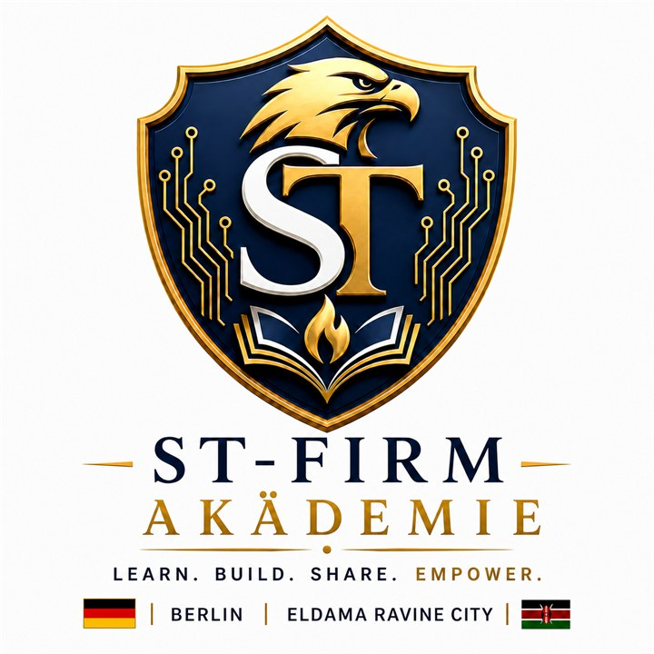
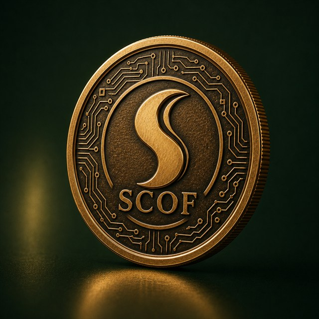
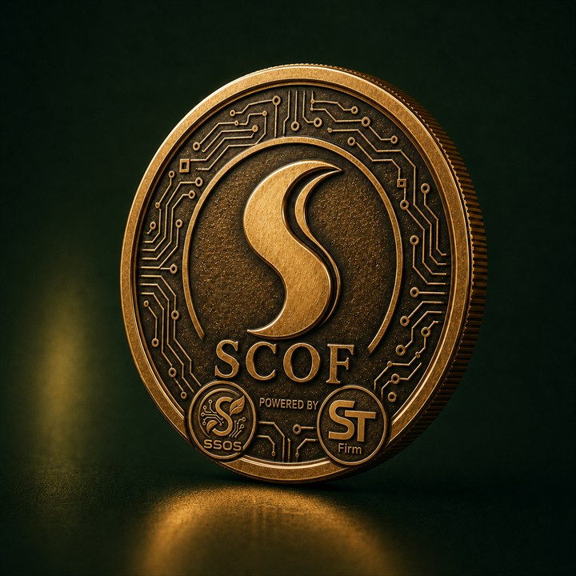

SSOS turns fragmented documents, workflows and decisions into one locally controlled intelligence layer—keeping operational knowledge close and human accountability visible.
One operational view for workflows, knowledge, accountability and decision support.
01/ 05
01
Workflow intelligence
Connect documents, processes, responsibilities and accountable actions.
02
Knowledge intelligence
Transform organizational information into searchable, useful context.
03
Executive intelligence
Give leadership clearer operational visibility and disciplined decision support.
04
Business continuity
Preserve institutional knowledge beyond individual employees and isolated files.
Deployment model: Each SSOS installation is configured around its users, operating processes, data boundaries, governance requirements and operating environment.
Kitale, Kenya · SCOF operationsOur first real-world proving ground.
04 · Systems proven through operations
We do not engineer in isolation.
SCOF gives ST‑Firm a real environment in which agriculture, software, traceability, infrastructure and commercial systems must work together.
01 / REALITY
Real constraints
Field conditions, people, processing, logistics and markets shape the technology.
02 / CONTEXT
Real data
Operational records become the foundation for responsible intelligence.
03 / TRUST
Real accountability
Decisions stay connected to people, places, workflows and outcomes.
04 / VALUE
Real value
Success means better visibility, stronger products and durable relationships.
The ecosystem begins with useful operations and builds each digital layer only where it strengthens visibility, resilience or long-term value.
01
Operate
Start with a real farm, organization or infrastructure need.
02
Connect
Capture workflows, records, assets and accountable actions.
03
Understand
Use SSOS to create context, reporting and decision support.
04
Strengthen
Build resilient energy, computing and operating infrastructure.
05
Allocate
Direct resources toward disciplined expansion and shared capacity.
Technology enters only where it improves clarity, resilience or responsible growth.
06 · ST‑Firm Stories
ST‑FIRM ORIGINAL
Knowledge Without Borders.
Meet the people layer of the ecosystem: practical education connecting Kenya 🇰🇪 and Deutschland 🇩🇪 with intelligent systems, enterprise and real opportunity.
BERLIN · DEUTSCHLANDELDAMA RAVINE · KENYA
ENGINEERING
AI · SYSTEMS
KENYA LINK
SOVEREIGNSYSTEMS
ST‑FIRM
PRESENTS
POWERED BY
SSOS
SOVEREIGN INTELLIGENCEBUSINESS CONTINUITY

ST‑FIRM AKÄDEMIE
Knowledge in motion.
LEARNBUILDSHAREEMPOWER
BERLIN↔ELDAMA RAVINE
KENYA 🇰🇪DEUTSCHLAND 🇩🇪
Kenya 🇰🇪 ↔ Deutschland 🇩🇪
Knowledge Without Borders
How learning becomes skill, opportunity and generational impact.
NILITOKA ELDAMA.NDOTO MFUKONI.MOI INTERNATIONAL.MOMBASA RUNWAY.NDEGE IKAPAA! ✈KENYA → DEUTSCHLANDTOUCHDOWN.LANDED IN BERLIN.A NEW CHAPTER BEGINS.BERLIN CITY LIGHTS.BUILDING SOVEREIGN SYSTEMS.ENGINEER SAIGUT JULIUS KIPKORIRBERLIN · ELDAMA RAVINEJOURNEY → SYSTEM
Knowledge becomes sovereign intelligence.
SEMA…SSOS
SOVEREIGN INTELLIGENCE · BUSINESS CONTINUITY
ST‑FIRM PRESENTSAKÄDEMIE
KNOWLEDGE WITHOUT BORDERS
ST‑FIRMAKÄDEMIE
LEARNBUILDSHAREEMPOWER
KNOWLEDGE WITHOUT BORDERS · 29 MEMBERS ONLINE
ONE CONNECTED ECOSYSTEM
Capability becomes a living system.
ST‑FirmSovereign engineering
SSOSOperational intelligence

SCOFLiving operations

Value ecosystemGrowth returns to people
01 Capability becomes engineering02 Engineering connects intelligence03 Intelligence strengthens real operations04 Operations create real-world value05 Value returns to people
From Kenya to Germany. From a farm to a systems company.
The ST‑Firm vision connects agricultural roots with engineering experience and a long-term bridge between Africa and Europe.
Engineer Saigut Julius KipkorirFounder and sole proprietor · ST‑Firm
01 · Agricultural roots
Kenya
A real coffee foundation establishes the problem, the responsibility and the opportunity.
02 · Engineering development
Germany
Technology and systems thinking become tools for connecting operations with better decisions.
03 · Systems architecture
ST‑Firm
Software, AI, infrastructure and resource intelligence are brought into one long-term architecture.
04 · Operating proof
SCOF
The coffee ecosystem becomes the first visible demonstration of the model operating in the real world.
Let’s build something useful
Engineering for operations that matter.
Talk with ST‑Firm about an operational partnership, technology collaboration, infrastructure linkage or long-term system that deserves to be built well.